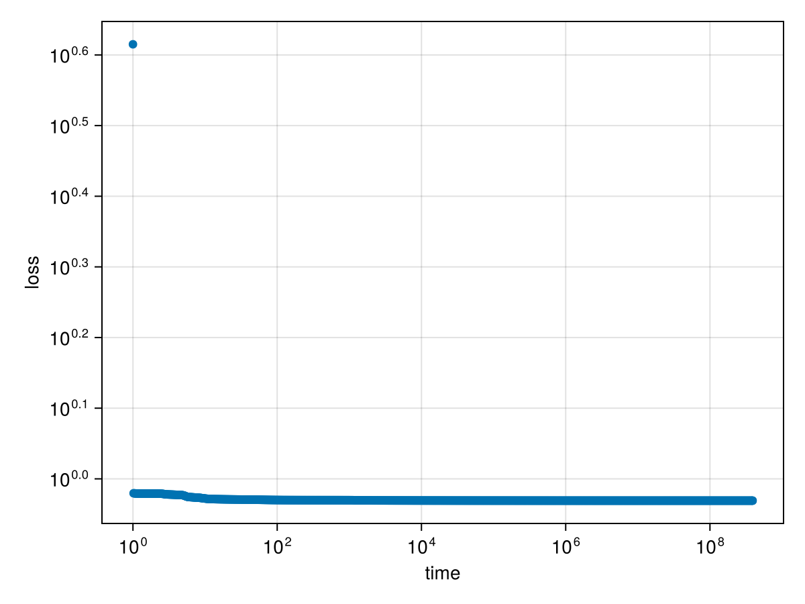

In the following example, we train a network with one hidden layer of 5 softplus neurons on random in- and output.
using MLPGradientFlow, Random
Random.seed!(123)
input = randn(2, 1_000) # 2-dimensional random input
target = randn(1, 1_000) # 1-dimensional random output
net = Net(; layers = ((5, softplus, true), # 5 relu neurons with biases
(1, identity, true)), # 1 identity neuron with bias
input,
target)
p = random_params(net)
result = train(net, p, maxtime_ode = 20., maxtime_optim = 20., n_samples_trajectory = 10^3)Dict{String, Any} with 20 entries:
"gnorm" => 0.000269637
"init" => Dict("w1"=>[0.149272 -0.196412 0.0; -0.329254 0.715402…
"x" => Dict("w1"=>[396.087 996.72 -888.439; -1408.95 1382.43 …
"optim_stopped_by" => "maxtime > 20.0s"
"loss_curve" => [4.12157, 0.954064, 0.953852, 0.953698, 0.953575, 0.95…
"target" => [0.911875 -0.792403 … -0.313917 -1.1881]
"optim_iterations" => 39823
"ode_stopped_by" => "maxtime > 20.0s"
"ode_iterations" => 16817
"optim_time_run" => 20.0007
"converged" => false
"ode_time_run" => 20.0191
"loss" => 0.93138
"input" => [0.808288 -1.10464 … 0.723346 -0.0100866; -1.12207 -0.…
"trajectory" => OrderedDict(0.0=>Dict("w1"=>[0.149272 -0.196412 0.0; -…
"ode_x" => Dict("w1"=>[244.874 617.799 -550.805; -837.006 821.743…
"total_time" => 58.89
"ode_loss" => 0.931382
"layerspec" => ((5, "softplus", true), (1, "identity", true))
"gnorm_regularized" => 0.000269637We see that optimization has found a point with a very small gradient:
gradient(net, params(result["x"]))ComponentVector{Float64}(w1 = [-8.55428604242858e-12 6.4242597854872864e-12 1.5102140718950685e-10; -9.23540158338089e-12 -3.7346587412054543e-10 3.90682148110013e-10; … ; -3.222214755727952e-5 1.3385677228171777e-5 -3.1595978519931124e-5; 1.5042513092193473e-5 -7.631916588377618e-6 1.4634746679803356e-5], w2 = [0.0002696366498763983 0.00010615106273824007 … 1.2312099215086933e-9 3.330751488714867e-7])Let us inspect the spectrum of the hessian:
hessian_spectrum(net, params(result["x"]))LinearAlgebra.Eigen{Float64, Float64, Matrix{Float64}, Vector{Float64}}
values:
21-element Vector{Float64}:
-1.0199263688974527e-11
-3.113928846776517e-14
6.351254669682557e-13
6.122458382865158e-10
1.9419176208839037e-8
5.304559132410346e-8
1.2618640878174258e-7
1.3844382824876826e-6
0.00041790752964145425
0.0026345583156859895
⋮
0.4989992543385414
8.036818126662276
29.612501206454095
59.74462628960729
108917.57942239344
164572.76557691378
241695.14811296845
1.5594728095095002e6
4.790661497896094e6
vectors:
21×21 Matrix{Float64}:
0.00396184 -0.0363048 -0.280609 … 1.79788e-8 4.627e-9
-0.0832212 0.456549 -0.0604823 -1.80976e-7 -1.28277e-7
-8.68687e-6 -1.38742e-6 7.38743e-7 0.0546409 0.363869
7.12977e-6 1.43721e-6 3.65296e-7 -0.0975991 -0.684646
1.47745e-6 4.66051e-7 7.76104e-7 0.0429388 0.321097
0.00988977 -0.0908836 -0.710865 … -4.72045e-8 -8.13064e-9
0.0815873 -0.447548 0.0565181 1.42308e-7 4.60499e-8
5.68315e-6 1.07627e-6 2.16691e-7 -0.40145 0.0512234
-4.60883e-6 -7.66593e-7 4.48271e-7 0.757172 -0.0989375
-9.8146e-7 -1.46587e-7 1.86605e-7 -0.356044 0.0477835
⋮ ⋱ ⋮
-8.3647e-7 1.4121e-7 -5.18441e-7 0.036082 -0.217972
4.62685e-7 3.67086e-7 -5.40086e-7 -0.0735446 0.409992
6.23845e-8 2.88149e-7 -5.23098e-7 0.0375173 -0.192186
-3.04452e-9 2.79256e-8 2.17149e-7 … -0.0527201 -0.00727688
3.37071e-8 -1.85088e-7 2.33872e-8 -0.336911 -0.168719
-0.698466 -0.12561 0.0119645 2.04656e-5 -0.000449687
0.693027 0.12638 -0.000777573 2.98223e-5 -0.000440457
0.00543881 -0.000770695 -0.0111841 3.999e-5 -0.000429358
0.0 0.0 0.0 … 6.63325e-5 -0.000320371The eigenvalues are all positive, indicating that we are in a local minimum.
using CairoMakie
function plot_losscurve(result; kwargs...)
f = Figure()
ax = Axis(f[1, 1], yscale = log10, xscale = log10, ylabel = "loss", xlabel = "time", kwargs...)
scatter!(ax, collect(keys(result["trajectory"])) .+ 1, result["loss_curve"])
f
end
plot_losscurve(result)